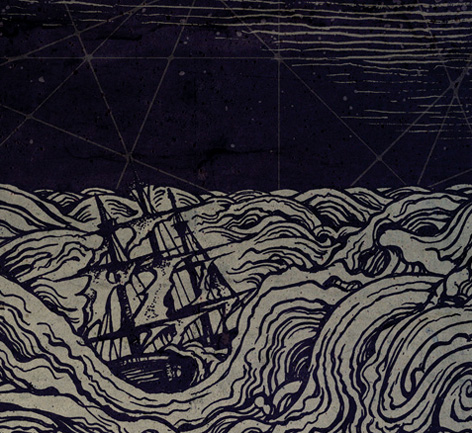

|
Poesía :
Oscuridad a mis espaldas
Autor : Estuspestus
|
|

Cuando cae la noche ella se hunde en su oscuro y pesado mar, y pretende que yo me ate pesadas piedras para hundirme con ella.
Su voracidad es inagotable. Su razón impenetrable. Su mirada no te regala más que frialdad, sus ojos no te ven, pero siempre están vigilándote.
Su sombra camina dando tumbos, buscándote... te acecha, se acerca... la esquivas... te escondes, te encierras.
Cuando sale el Sol vuelve a arder, ella sale del mar, pero tú, pobre ignorante... tú sigues encerrado; cada día que pasa lo estás más, tras un frío muro que te cerca el alma.
Cada vez te encuentras nuevas pesadillas, que reptan por las esquinas hasta la cabecera de tu cama, que comen de tus sueños y visiones, y te pudren el alma y la sonrisa.
Comienzas a recelar, comienzas a huir, soportas una carga... una armadura. Te hundes a cada paso que das y tropiezas con facilidad.
Tu huida no tiene fin, y parece solo acabar en un salto.
La caída, eterna.
El otro lado, inalcanzable.
La cumbre, nevada.
Y la retirada, imposible.
Y todo se lo pareces deber a ella. Su veneno lo impregna todo. Tendida en el suelo es una sombra, erguida es un pozo.
Tu maldición es tu desesperación. Sombra pegajosa que no te deja escapar.
Tus amigos no lo ven, tus vecinos lo escuchan. Tu soledad es tu ataúd. Tus sollozos tu mortaja. Y la noche tu tumba.
No tienes donde huir, vislumbras un camino, pero las puertas parecen cerradas.
Tu única esperanza es tu sueño tallado en carne y pintado con las luces del alba. Compañía divina que cose tus heridas y recompone tu frágil esqueleto.
Ella es la puerta, la llave y la cerradura. Sus negras alas te pondrán a buen recaudo, y su sonrisa atraerá de nuevo el sol, que secará los océanos reptantes que te persiguen.
Los gritos de rabia de la acechadora cubrirán el cielo de agonía.
Tus ojos correrán grave peligro de ser devorados, así no podrás encontrar el camino.
Tus entrañas correrán peligro de ser arrancadas, así no hallarás hogar alguno.
Tus miembros correrán peligro de ser amputados, así no podrás levantarte.
Tu corazón correrá peligro de ser vilmente pisoteado, y sin él, solamente serás un cascarón: sin piedad, compasión, amor, devoción, risa, llanto ni descanso.
Guarda y olvida toda venganza y así saldrás victorioso, corre y no mires atrás, la venganza es su terreno y no querrás volver.
Estúpido mío corre y vencerás.... ¡huye!... y lo lograras...
Cuida a la dama y erigirás tu reino.
Te amo, estúpido... y eso será tu arma, pero también será tu escudo.
Alabado sea el Sol, que hará de tu mirada una llama de voluntad.
|
|
 RSS
RSS